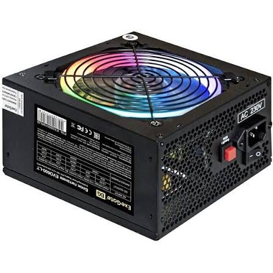

Map area kasutamine

Toiteplokk on elektrotehnikas kasutatav seade, mis varustab elektritarvitit sobivate parameetritega (elektripinge, voolutugevus ja sagedus) elektrienergiaga. Toiteplokid peaminefunktsioon on muundada sisendallika (tavaliselt elektrivõrgu vahelduvpinge 230V, 50Hz) energia tarvitile sobivaks alalispingeks. Tänapäeva toiteplokkid ei ole enam kõigest passiivsed muundurid, vaid sisaldavad keerulisi kaitsemehhanisme, juhtimisahelaid ja tarkvarasüsteeme, et tagada võimalikud energiaefektiivne seada ning riistvaraline turvalisus.
tagasi